Configuración de DHCP Server sobre un bridge, de manera manual.
Índice
Introducción Escenario a configurar Configuración del bridge Creación del bridge LAN-10-10 Asignación de las interfaces físicas al bridge Asignación manual de IP al bridge Creación del pool de IPs Configuración del DHCP Network Activación del DHCP Server sobre el bridge Validación del servicio DHCP Comprobación de conectividad entre el cliente y el router Eliminando la configuración aplicada
Introducción
En entornos reales basados en RouterOS, la red local (LAN) rara vez se gestiona a través de una única interfaz física. Lo habitual es agrupar varios puertos Ethernet — y, en muchos casos, interfaces inalámbricas— mediante un bridge, que actúa como un dominio de capa 2 común para todos los dispositivos internos.
En este contexto, la configuración del DHCP Server debe realizarse sobre el bridge, y no sobre interfaces individuales, con el objetivo de garantizar que todos los equipos conectados a la LAN, independientemente del puerto físico utilizado, reciban correctamente su configuración IP..
RouterOS implementa el servicio DHCP de forma modular y explícita, separando claramente: • el rango de direcciones asignables, • los parámetros de red ofrecidos a los clientes, • y el servicio DHCP asociado a una interfaz concreta.
Esta arquitectura proporciona una gran flexibilidad, pero exige un alto grado de precisión en la configuración. Un error frecuente, incluso entre usuarios con experiencia en redes, consiste en activar el DHCP Server sobre una interfaz incorrecta o no coherente con el diseño de la LAN, lo que puede provocar fallos de conectividad difíciles de diagnosticar.
En este documento se describe cómo configurar correctamente un DHCP Server sobre un bridge en RouterOS, prestando especial atención a las particularidades del sistema, al orden lógico de configuración y a los errores más comunes asociados a este escenario.
Se asume que el lector ya conoce el funcionamiento general del protocolo DHCP, por lo que el enfoque se centra exclusivamente en su implementación práctica en MikroTik.
Escenario a configurar.
Para este tutorial se propone un escenario típico de red doméstica o de pequeña oficina, en el que un router MikroTik gestiona tanto la conexión a Internet como la red local.
A continuación se presenta un diagrama visual del escenario, con el objetivo de facilitar la comprensión de la topología antes de proceder con la configuración paso a paso.
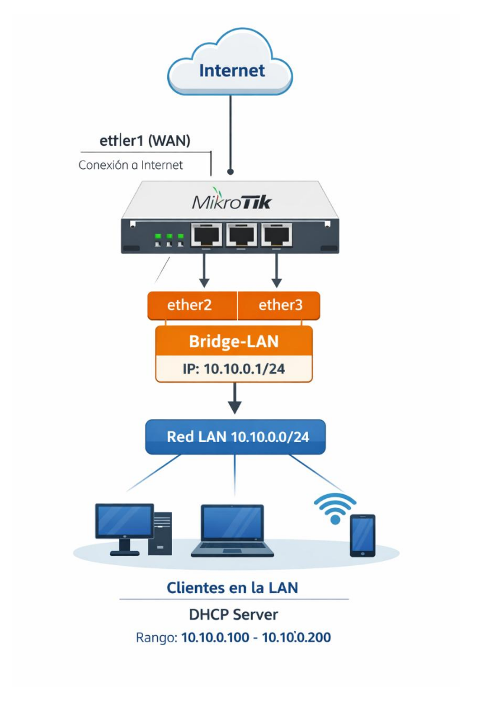
La configuración de la interfaz ether1, que proporcionará conexión a la red WAN, no se abordará en este documento, ya que fue tratada en detalle en los tutoriales de la semana pasada.
Las interfaces ether2 y ether3 se agrupan en un bridge, formando el dominio de la LAN. Sobre este bridge se configurará un DHCP Server, encargado de asignar direcciones IP dinámicas a los dispositivos de la red local, dentro del rango 10.10.0.100 – 10.10.0.200.
Esta disposición permite que todos los clientes conectados al bridge, ya sea por cable o de forma inalámbrica, reciban automáticamente su configuración de red, garantizando la comunicación entre los dispositivos de la red local y estableciendo la base para el acceso a redes externas.
Configuración del bridge
En primer lugar, se procederá a crear el bridge que agrupará las interfaces LAN del router. Este paso es fundamental, ya que todas las interfaces que formarán parte de la red local deben estar unidas en un único dominio de capa, garantizando la correcta comunicación entre los dispositivos internos.
Una vez creado el bridge, se asignarán al mismo las interfaces físicas correspondientes (ether2 y ether3), asegurando que todo el tráfico de la red local se gestione de forma centralizada a través de esta estructura.
Finalmente, se asignará una dirección IP estática al bridge, que actuará como puerta de enlace de la red local. Esta dirección será utilizada por los clientes conectados para comunicarse con el router y, posteriormente, acceder a redes externas a través de la WAN.
Esta organización previa establece la base necesaria sobre la que se configurará el servicio DHCP, permitiendo una asignación automática y coherente de direcciones IP a los dispositivos de la LAN.
Creación del bridge LAN-10-10
Partiremos del escenario definido en la sección “AF08 - Configuración de IP dinámica sobre bridge”, en el que contamos con un router con conectividad a Internet a través de un bridge que incluye la interfaz ether1.
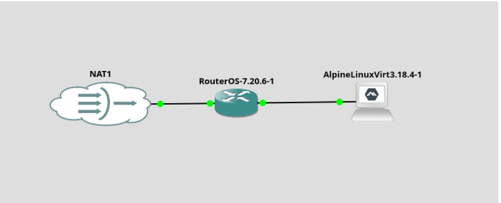
A modo de resumen, se indican a continuación los comandos necesarios para configurar la interfaz ether1 en caso de partir de un router limpio. Esta configuración establece el acceso a la red WAN mediante DHCP:
interface/bridge/add name=bridge-gateway comment=”Bridge Gateway”
interface/bridge/port/add bridge=bridge-gateway interface=ether1
ip/dhcp-client/add interface=bridge-gateway disable=no
!!! [warning] Nota técnica: se asume que la interfaz WAN se gestiona mediante DHCP y que el bridge “bridge-gateway” actúa exclusivamente como enlace hacia la red externa
A continuación, se procederá a crear el nuevo bridge que dará servicio a la red local 10.10.0.0/24, encargado de agrupar las interfaces LAN y de actuar posteriormente como puerta de enlace de la red interna, ejecutando el siguiente comando:
interface/bridge/add name=bridge-10-10 comment=”Bridge red 10.10”
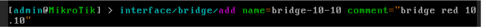
Por último, verificamos que el bridge se ha creado correctamente ejecutando:interface/bridge/print
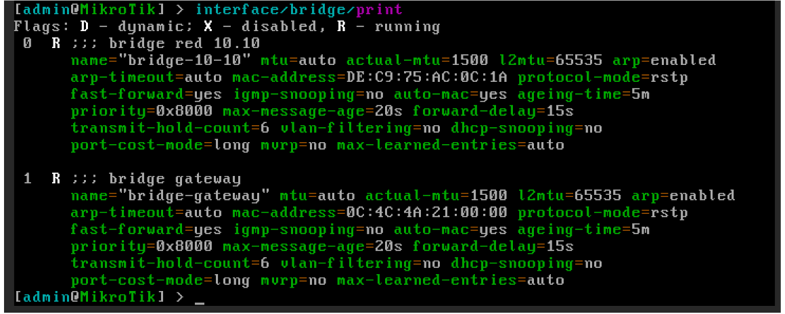
Asignación de las interfaces físicas al bridge
En primer lugar, listamos los bridges configurados en el router para comprobar su estado actual, ejecutando el siguiente comando:
interface/bridge/print
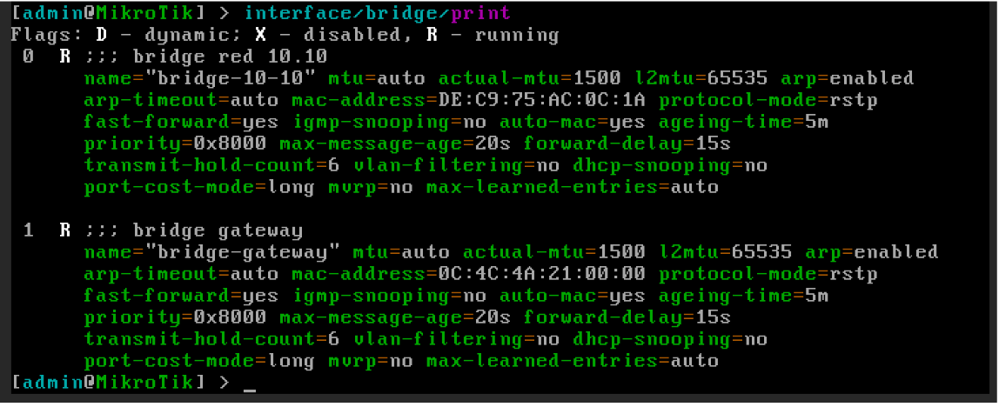
A continuación, añadimos las interfaces físicas ether2 y ether3 al bridge bridge- 10-10, que actuará como dominio de la red local:
interface/bridge/port/add bridge=bridge-10-10 interface=ether2
interface/bridge/port/add bridge=bridge-10-10 interface=ether3
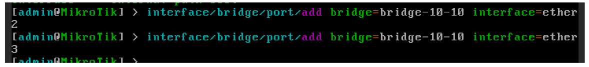
Una vez añadidas al bridge, las interfaces ether2 y ether3 dejan de ser puntos lógicos de red de forma individual. A partir de este momento, el punto lógico de comunicación pasa a ser el bridge, que representa a toda la red LAN a nivel de capa 3.
Por último, verificamos que las interfaces se han añadido correctamente al bridge ejecutando:
interface/bridge/port/print
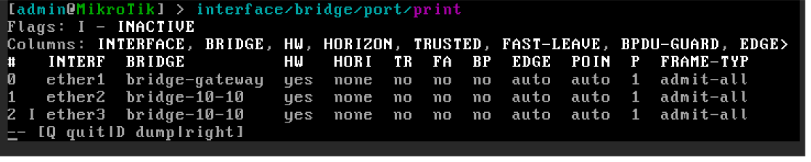
Asignación manual de IP al bridge
Para finalizar el ejemplo, vamos a asignar una dirección IP al bridge de forma manual.
Una vez que las interfaces físicas forman parte de un bridge, la configuración IP debe realizarse siempre sobre el bridge, ya que este pasa a ser el punto lógico de red.
En primer lugar, listamos los bridges existentes en el router:
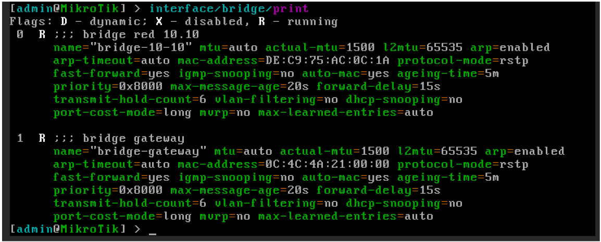
interface/bridge/print
Ip/address/add address=10.10.0.1/24 interface=bridge-10-10
comment=“IP bridge 10.10”
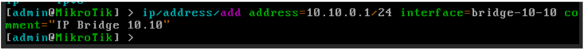
Comprobamos que la dirección IP se ha asignado correctamente al bridge:
ip/address/print
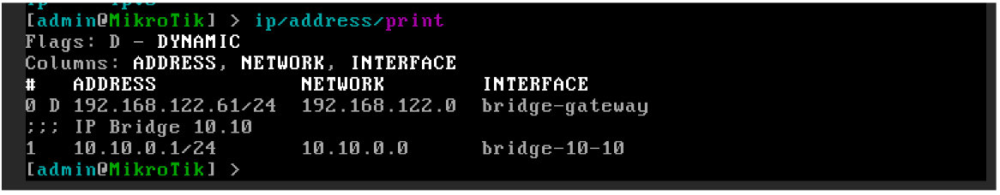
Al asignar una IP a una interfaz o bridge, RouterOS crea automáticamente la ruta de conexión correspondiente a esa red.
Podemos verificarlo con el siguiente comando.
ip/route/print
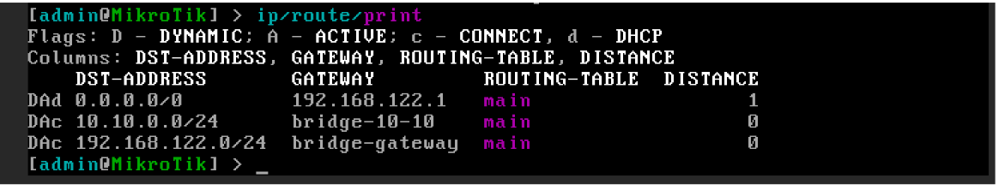
Creación del pool de IPs
El IP Pool define el rango de direcciones que el DHCP Server podrá asignar dinámicamente a los clientes de la red local.
Para la red 10.10.0.0/24, crearemos un pool con direcciones comprendidas entre 10.10.0.100 y 10.10.0.200, ejecutando el siguiente comando:
ip/pool/add name=pool-10-10 ranges=10.10.0.100-10.10.0.200 Para verificar que el pool se ha creado correctamente, ejecutamos:
ip/pool/print
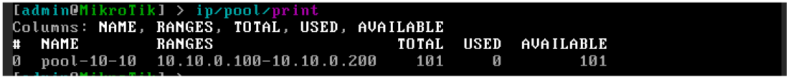
Configuración del DHCP Network
El DHCP Network define los parámetros de red que se entregarán a los clientes, y no las direcciones IP individuales. Entre estos parámetros se incluyen:
• La dirección de red. • La IP de la puerta de enlace (gateway). • Las IPs de los servidores DNS. • Opcionalmente, el dominio al que pertenecerán los clientes.
Para configurar estos parámetros en la red 10.10.0.0/24, ejecutamos:
ip/dhcp-server/network/add address=10.10.0.0/24
gateway=10.10.0.1 dns-server=10.10.0.1,8.8.8.8
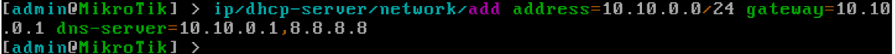
Comprobamos que la configuración se ha generado correctamente con:ip/dhcp-server/network/print
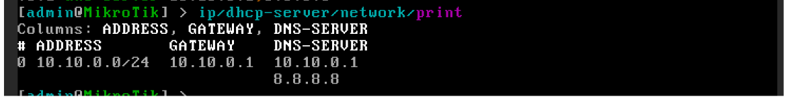
Activación del DHCP Server sobre el bridge
El DHCP Server es el servicio que escucha las solicitudes de configuración de red de los clientes y les asigna direcciones IP a partir del pool definido previamente.
Al activarlo, se asocia una interfaz de red con un pool de direcciones y se establece el tiempo de concesión (lease time), que determina durante cuánto tiempo una dirección IP permanece asignada a un cliente antes de ser renovada.
Para activar el DHCP Server en el bridge bridge-10-10, usando el pool pool-10-10 y un lease time de 1 hora (3600 segundos), ejecutamos:
ip/dhcp-server/add name=dhcp-10-10 interface=bridge-10-10
address-pool=pool-10-10 lease-time=3600
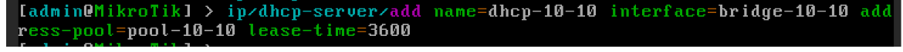
Podemos verificar que el DHCP Server se ha activado correctamente ejecutando el siguiente comando:
ip/dhcp-server/print
• El nombre del servidor (dhcp-10-10) • La interfaz asociada (bridge-10-10) • El pool de direcciones asignado (pool-10-10) • El lease time configurado
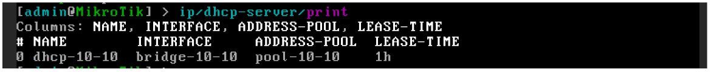
Esto confirma que el servicio está activo y listo para asignar direcciones IP a los clientes de la red local.
Validación del servicio DHCP
Para comprobar el correcto funcionamiento del DHCP Server, podemos conectar cualquier equipo cliente a la interfaz ether2 del router. En este ejemplo se ha utilizado una instancia de Alpine Linux como cliente DHCP..
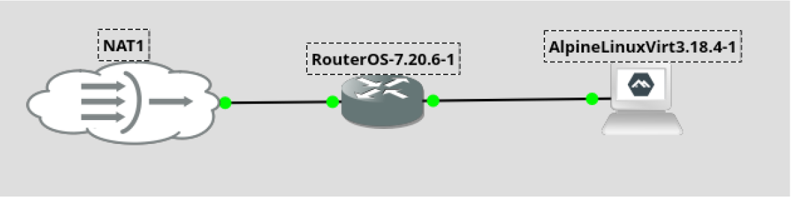
Una vez iniciada la instancia, abrimos la consola y forzamos la renovación de la dirección IP ejecutando.udhcpc -i eth0
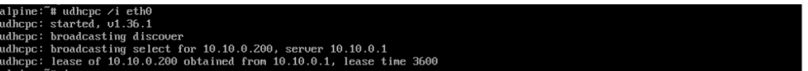
Verificamos la configuración de red asignada al cliente con:
ip a
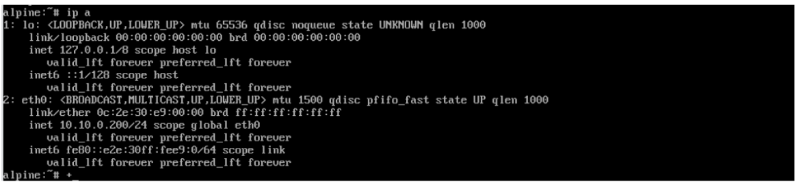
Desde la consola del router, es posible confirmar la asignación revisando el lease creado al conceder la IP al cliente:
ip/dhcp-server/lease/print
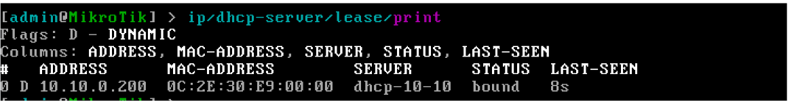
Este procedimiento valida que el DHCP funciona correctamente y que los equipos conectados al bridge reciben su configuración IP automáticamente, tanto desde el cliente como desde el servidor.
Comprobación de conectividad entre el cliente y el router
Para asegurarnos de que la red local y el DHCP funcionan correctamente, es importante verificar la conectividad entre el cliente y el router.
Desde el terminal de la instancia Alpine Linux, comprobamos la conectividad hacia la puerta de enlace de la red (el bridge del router) ejecutando:.
ping 10.10.0.1
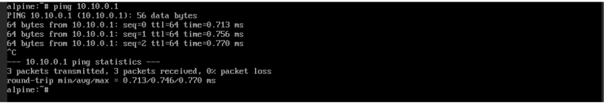
De manera inversa, podemos comprobar que el router puede comunicarse con el cliente.
Primero, revisamos en el lease del DHCP Server la IP asignada al cliente
ip/dhcp-server/lease/print
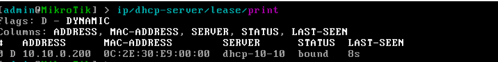
A continuación, ejecutamos un ping desde la consola del router hacia el cliente.
ping 10.10.0.200
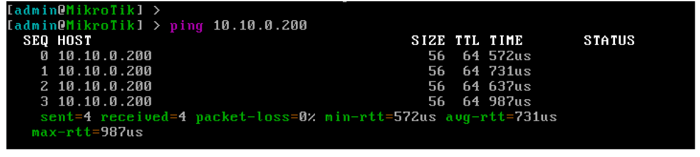
Este procedimiento garantiza que el cliente puede comunicarse con la puerta de enlace y que el router puede llegar al cliente, estableciendo así la base para la conectividad interna y futura salida a Internet.
Eliminando la configuración aplicada.
Antes de iniciar un nuevo escenario o repetir un laboratorio, es fundamental eliminar correctamente la configuración aplicada en el router. Este procedimiento evita que queden restos de configuraciones anteriores que puedan generar comportamientos inesperados o errores complejos de diagnosticar.
Aunque RouterOS ofrece la opción de realizar un reset completo del equipo, en entornos formativos y profesionales resulta mucho más instructivo y seguro desmontar la configuración de forma manual y ordenada, respetando las dependencias entre los distintos elementos (DHCP, direcciones IP, bridges, pools, etc.).
En esta sección se describe el procedimiento paso a paso para retirar toda la configuración implementada en el escenario, comprendiendo qué se elimina en cada momento y por qué, dejando el router en un estado limpio y listo para futuras prácticas o nuevas configuraciones.
Comenzamos eliminando el servicio DHCP, ya que depende directamente del resto de elementos de la configuración.
Listamos los servidores DHCP configurados:
ip/dhcp-server/print
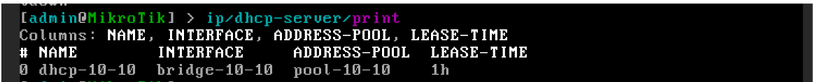
Eliminamos el DHCP Server creado para el escenario (en este caso, dhcp-10-10):
ip/dhcp-server/remove dhcp-10-10
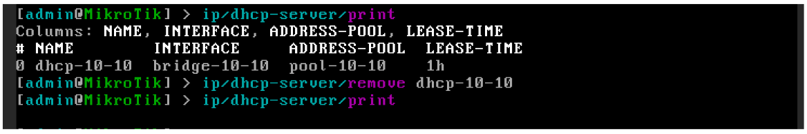
Alternativamente, también podría eliminarse utilizando su índice, por ejemplo:
ip/dhcp-server/remove 0”
ip/dhcp-server/lease/print
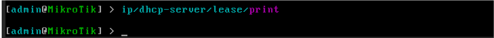
En configuraciones más complejas podría existir algún lease residual. En ese caso, podría eliminarse manualmente mediante su índice:
ip/dhcp-server/lease/remove <<índice>>
/ip/dhcp-server/network/print
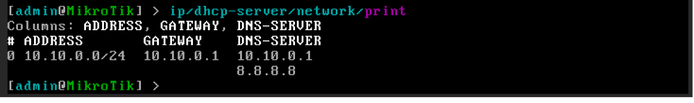
Eliminamos la red correspondiente al escenario (en el ejemplo, el índice 0):
/ip/dhcp-server/network/remove 0
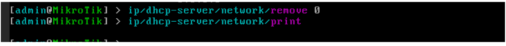
A continuación, eliminamos el pool de direcciones utilizado por el DHCP Server.
Listamos los pools configurados:
/ip/pool/print
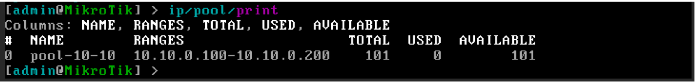
Eliminamos el pool creado para este laboratorio:
/ip/pool/remove pool-10-10
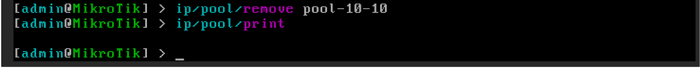
Antes de eliminar el bridge, es obligatorio retirar cualquier dirección IP asociada.
Listamos las direcciones IP configuradas en el router.
/ip/address/print
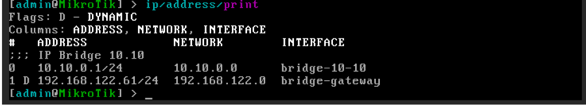
Eliminamos la IP asignada al bridge bridge-10-10, utilizando el índice correspondiente o el filtro por interfaz:
/ip/address/remove [find interface=bridge-10-10]
/ip/address/remove 0
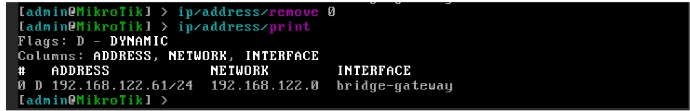
Un bridge no puede eliminarse mientras tenga interfaces asociadas. Listamos los puertos del bridge:
/interface/bridge/port/print
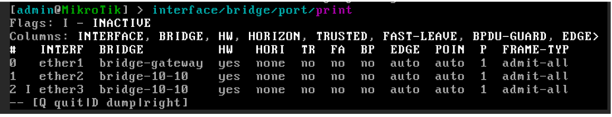
Eliminamos las interfaces ether2 y ether3 del bridge:
/interface/bridge/port/remove 2
/interface/bridge/port/remove 1
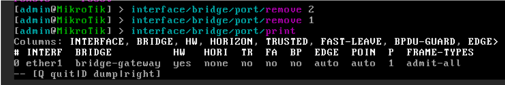
Una vez eliminado todo lo anterior, el bridge puede borrarse sin problemas.
Listamos los bridges configurados:
/interface/bridge/print
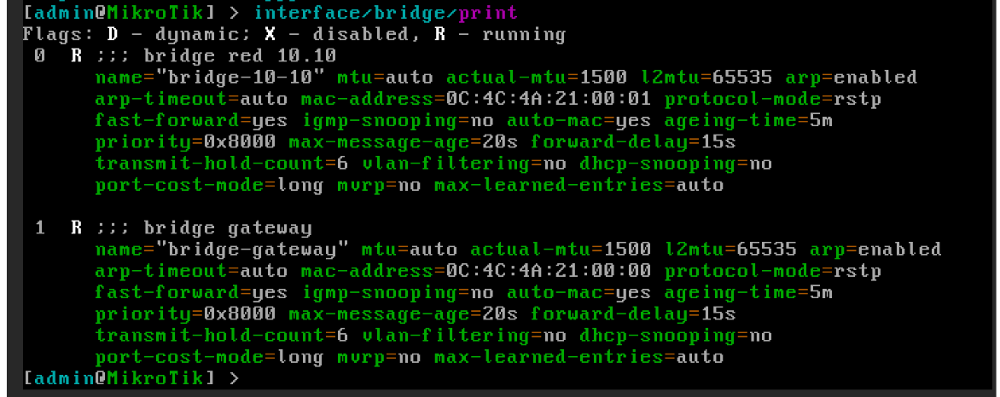
Eliminamos el bridge bridge-10-10, utilizando su nombre como parámetro:
/interface/bridge/remove bridge-10-10
/interface/bridge/remove 1
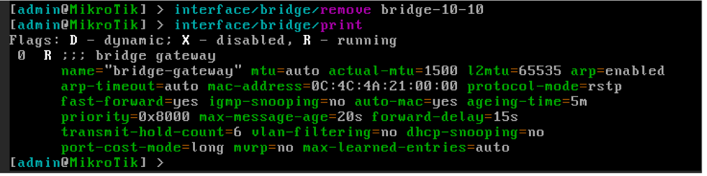
En este punto solo quedaría eliminar la configuración de la interfaz ether1, correspondiente a la conexión WAN, que ha sido tratada en detalle en los tutoriales de la semana pasada.
Para comprobar que el router ha quedado limpio, ejecutamos los siguientes comandos:
interface/bridge/print
ip/address/print
ip/dhcp-server/network/print
ip/dhcp-server/print
ip/pool/print
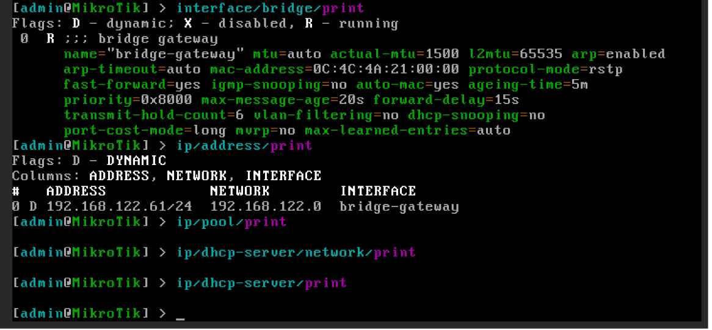